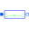

NotLogical 'not': y = not u |
Information
This information is part of the Modelica Standard Library maintained by the Modelica Association.
The output is true if the input is false, otherwise the output is false.
Connectors (2)
| u |
Type: BooleanInput Description: Connector of Boolean input signal |
|
|---|---|---|
| y |
Type: BooleanOutput Description: Connector of Boolean output signal |
Used in Examples (2)
|
Modelica.Blocks.Examples Demonstrates the usage of logical blocks |
|
|
Modelica.Thermal.HeatTransfer.Examples Control temperature of a resistor |
Used in Components (3)
|  |
Modelica.Electrical.Analog.Examples.Utilities Switched capacitor which can represent a positive or negative resistance |
|
Modelica.Electrical.PowerConverters.DCAC.Control Intersective PWM |
|
|
Modelica.Electrical.PowerConverters.DCDC.Control Generates a pulse width modulated (PWM) boolean fire signal |